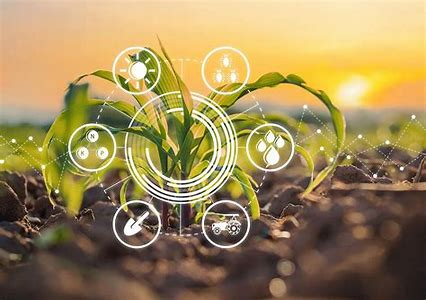
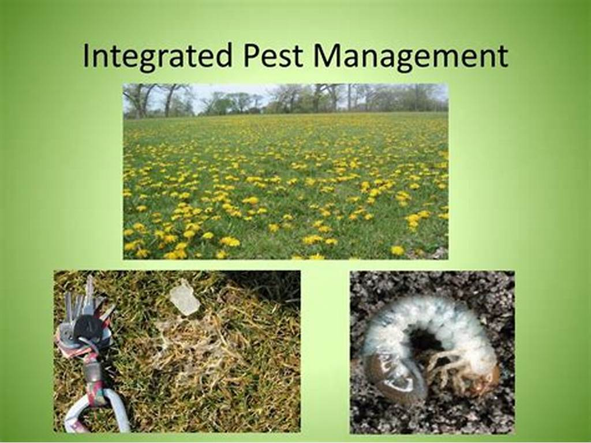
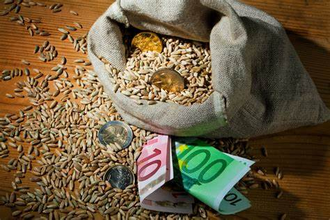
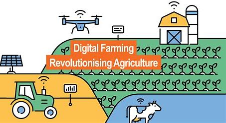
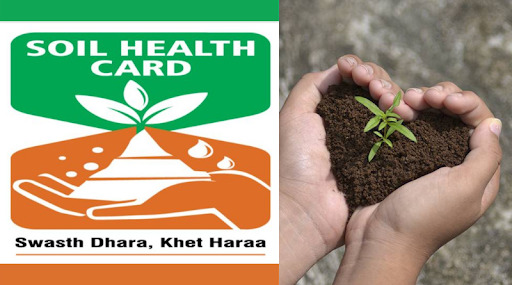
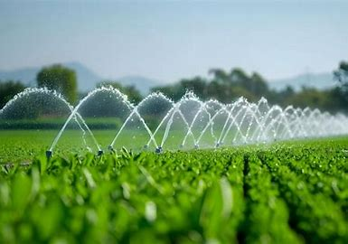

Climate-Smart Agriculture: Adapting to Changing Weather Patterns
Learn how farmers are adapting their practices to cope with unpredictable weather conditions and implement sustainable solutions.

Integrated Pest Management: A Holistic Approach
Discover how to control pests effectively while minimizing environmental impact through integrated management strategies.

New Government Subsidies for Small-Scale Farmers
Stay updated on the latest financial support programs available for farmers in your region and learn how to apply.

Digital Farming: Embracing Technology in Agriculture
Explore how digital tools and smart farming technologies are revolutionizing modern agricultural practices.

Soil Health Management: Building Sustainable Farms
Learn essential practices for maintaining and improving soil health to achieve better crop yields sustainably.

Water Conservation in Agriculture: Best Practices
Discover effective strategies for water management and conservation in modern farming operations.